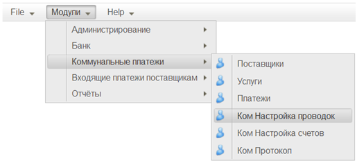
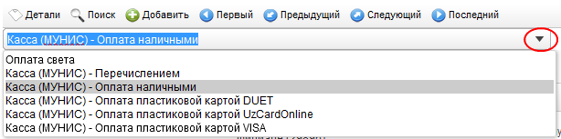
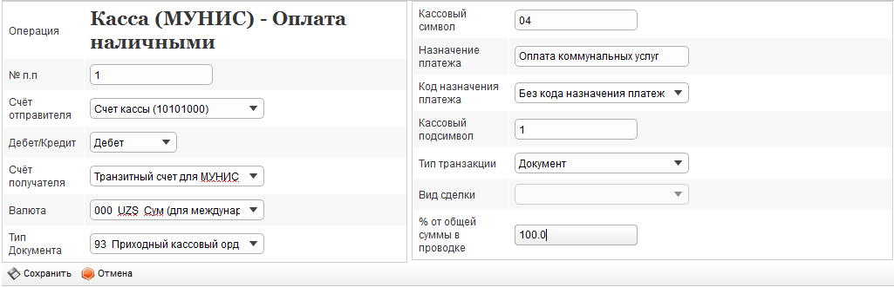

Для осуществления платежей через систему «МУНИС» необходимо настроить порядок бухгалтерских проводок для каждого вида операций (по принятию платежей и взаимодействию Банка с системой «МУНИС»).
Модуль настройки проводок доступен из пункта меню «Модули \ Коммунальные платежи \ Ком. Настройка проводок» (см. Рисунок 1).

Рисунок 1
Работа в модуле начинается с пустой формы списка проводок (см. Рисунок 2). Для настройки проводок по какой-либо операции, выберите нужную из выпадающего списка:

Рисунок 2
После выбора операции в списке появляются записи отражающие последовательность проводок, генерируемых при активации операции (см. Рисунок 3).

Рисунок 3
Для редактирования проводки из списка нужно дважды кликнуть мышкой по выбранной записи.
Для добавления новой записи к списку проводок нужно нажать кнопку  на панели управления.
на панели управления.
Форма редактирования проводки (см. Рисунок 4).

Рисунок 4
Форма настройки счёта содержит следующие поля:
•№ п.п – порядковый номр проводки при операции. Поле заполняется с клавиатуры. Обязательно для заполнения.
•Счёт отправителя – маска счёта отправителя средств. Поле заполняется выбором из выпадающего списка. Обязательно для заполнения.
•Дебет/Кредит – "направление" проводки относительно счёта отправителя. Поле заполняется выбором из выпадающего списка. Обязательно для заполнения.
•Счёт получателя – Поле заполняется выбором из выпадающего списка. Обязательно для заполнения.
•Валюта – валюта операции. Поле заполняется выбором из выпадающего списка. Обязательно для заполнения.
•Тип Документа – тип документа-основания для проведения операции. Поле заполняется выбором из выпадающего списка. Обязательно для заполнения.
•Кассовый символ – Поле заполняется с клавиатуры.
•Назначение платежа – всомогательное поле для описания проводки. Поле заполняется с клавиатуры.
•Код назначения платежа – Поле заполняется выбором из выпадающего списка. Обязательно для заполнения.
•Кассовый подсимвол – Поле заполняется с клавиатуры.
•Тип транзакции – Поле заполняется выбором из выпадающего списка. Обязательно для заполнения.
•Вид сделки – Поле заполняется выбором из выпадающего списка. Опциональное поле.
•% от общей суммы в проводке – % суммы платежа, который будет направлен получателю средств после снятия комиссии. При платежах, проводимых по системе "МУНИС" для поставщиков, не являющихся патнёрами Банка, в поле всегда вносится значение "100", т. к. оплата коммунальных услуг чрез систему "МУНИС" не предполагает комиссии Банка.
Для сохранения настроек нужно нажать кнопку  .
.
Для отмены внесённых изменений нужно нажать кнопку  .
.